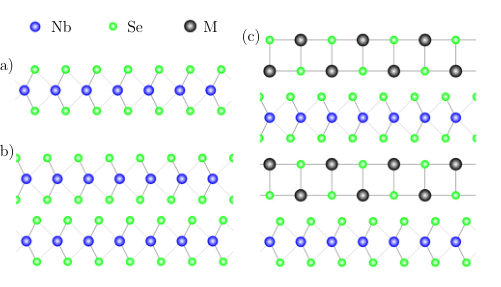
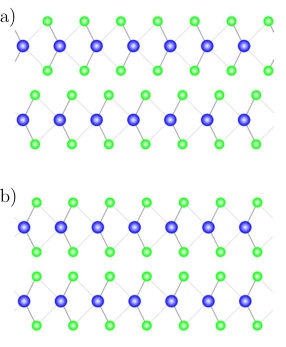
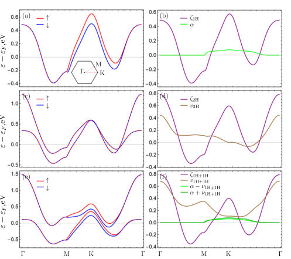

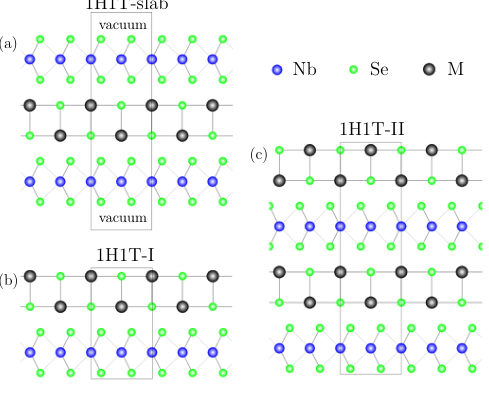
Authors: Carlos Payá, Ángel Ibabe, Mario Gómez, Thomas Kanne, Jesper Nygård, Ramón Aguado, Pablo San-Jose, Eduardo J. H. Lee, Elsa Prada
Type: both · Category: other · PDF: https://arxiv.org/pdf/2607.18371v1
Analysis basis: full PDF text, analyzed in chunks
Topic relevance: Keldysh / 2PI / non-Gaussian methods 3/5 · driven-dissipative phase transition 3/5 · non-equilibrium universality 2/5 · Kondo & dissipative impurity 1/5 · methods for driven-dissipative 1/5 · non-equilibrium dynamics 1/5
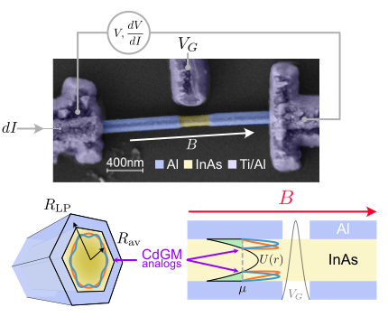
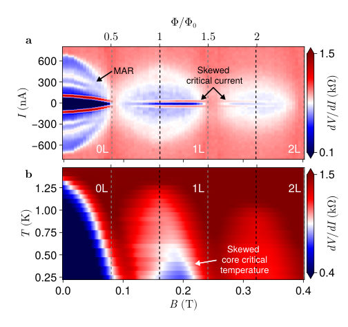
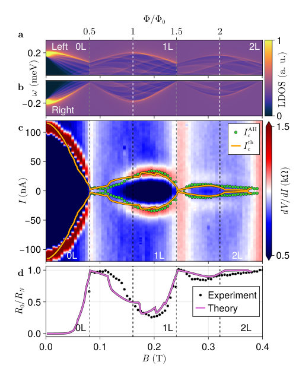
Summary. The authors investigate synthetic Caroli-de Gennes-Matricon (CdGM) states in full-shell nanowire Josephson junctions. By measuring the critical current ($I_c$) under an applied magnetic field, they observe a distinct skewness pattern. This signature is theoretically linked to CdGM analogs within the semiconductor core, providing strong evidence for their existence and utility as a diagnostic tool for superconducting physics.
Why it may be interesting. This work provides a concrete experimental realization and diagnostic tool (the $I_c$ skewness) for studying exotic superconducting phenomena like CdGM states, which are highly relevant in mesoscopic superconductivity and topological materials research.
Main problem. The study aims to experimentally probe synthetic Caroli-de Gennes-Matricon (CdGM) states within full-shell nanowire Josephson junctions.
Main result. The characteristic skewness observed in the critical current ($I_c$) and zero-bias resistance ratio ($R_0/R_N$) is attributed to these CdGM analogs residing in the semiconductor core, superimposed on Little-Parks oscillations from the superconducting shell.
Method. The research combines transport measurements (measuring $dI/dV$ vs. $B$ and $I$) with microscopic theoretical modeling using Keldysh Green's functions formalism.
Model / system. The physical system is a full-shell hybrid nanowire Josephson junction ($ ext{SC}/ ext{SM}$ core). The model uses a tight-binding Bogoliubov-de Gennes Hamiltonian to calculate observables like the Local Density of States (LDOS) and critical current.
Key observables. Critical current ($I_c$) skewness, zero-bias resistance ratio ($R_0/R_N$), Little-Parks oscillations in $dI/dV$, and superconducting gap modulation.
Important parameters / regimes. Axial magnetic field ($B$), superconducting gap ($\Delta$), flux quantum ($\Phi_0$), and the level spacing of CdGM analogs relative to $\Delta$.
Assumptions / limitations. The analysis assumes that the observed skewness is dominated by the finite population of CdGM analogs crossing zero energy, rather than just shell gap collapse.
Figures summary. Figures illustrate $dI/dV$ vs. $B$ showing Little-Parks lobes and current skewness; other figures compare theoretical predictions for $I_c$ skewness against experimental data derived from the $R_0/R_N$ ratio.
Paper structure. The paper establishes the physical platform (full-shell nanowires) and the phenomenon of CdGM analogs. It presents measurements showing characteristic current modulation and asymmetry, which are then theoretically modeled using Green's functions to confirm that the skewness fingerprint uniquely identifies the presence of these subgap states.
Full-shell hybrid nanowires consisting of a semiconductor core fully enveloped by a superconducting shell have emerged as a platform to study Caroli-de Gennes-Matricon (CdGM) analogs. These subgap states can be considered a synthetic version of CdGM states in Abrikosov vortices. Unlike conventional CdGM states, these analogs exhibit a level spacing comparable to the superconducting gap, making them readily observable via tunneling spectroscopy techniques. The spectral density of CdGM analogs follows a characteristic skewed pattern as a function of applied axial magnetic field, an effect that is superimposed on the Little-Parks oscillations of the shell's gap induced by fluxoid quantization. Here, we provide experimental evidence for CdGM analogs through a distinctive skewness fingerprint in the critical current and zero-bias resistance of overdamped Josephson junctions based on full-shell nanowires.
Authors: Geil Emdi, Tomosato Hioki, Koujiro Hoshi, Takahiko Makiuchi, Aoi Yamauchi, Eiji Saitoh
Type: both · Category: other · PDF: https://arxiv.org/pdf/2607.18807v1
Analysis basis: full PDF text, analyzed in chunks
Topic relevance: spintronics-quantum-optics interface 3/5 · analog quantum simulation 1/5 · correlated / nonlocal dissipation 1/5 · driven-dissipative phase transition 1/5 · exotic spin models in light-matter 1/5 · non-equilibrium dynamics 1/5
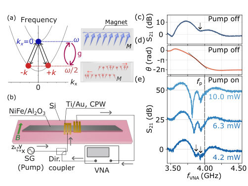
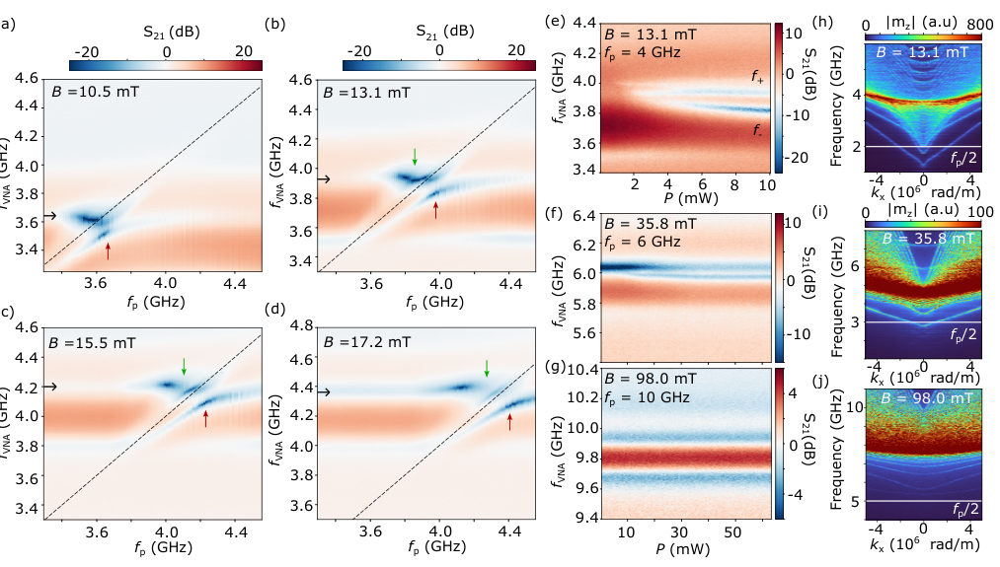
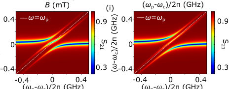
Summary. This work investigates how strong, nonlinear magnon interactions in patterned magnetic films can spontaneously create multiple distinct energy coupling pathways. By observing and modeling double anticrossings whose characteristics depend strongly on pump power, the authors prove that three-magnon scattering generates two separate magnon populations, effectively creating multiple independent coupling channels within one physical system.
Why it may be interesting. The ability to dynamically generate multiple coupling channels via nonlinear magnon interactions is highly relevant to understanding engineered quantum systems where mode coupling dictates device functionality, bridging concepts from cavity QED/optomechanics into magnonics.
Main problem. To demonstrate that nonlinear magnon interactions can dynamically generate multiple emergent coupling channels within a single magnetic system, moving beyond channels fixed by device geometry.
Main result. The system exhibits pump-induced double anticrossings attributed to nondegenerate three-magnon splitting, which generates two distinct magnon populations and thus two effective coupling channels with the Kittel mode.
Method. A combination of microwave spectroscopy (VNA measurements) on patterned permalloy films and theoretical modeling using a three-magnon coupling Hamiltonian ($ ext{H}{ ext{nd}}$) coupled to an effective mean-field interaction ($ ext{H}$).}
Model / system. The physical system is spin waves (magnons) in patterned permalloy films. The model involves three-magnon scattering processes and the coupling of the resulting secondary magnon pairs to a primary Kittel mode.
Key observables. Double anticrossing features in the $S_{21}$ spectrum, frequency gap ($\Delta f_{ ext{gap}}$), and central frequency shift ($\delta\omega_c$).
Important parameters / regimes. Pump power ($P$), applied magnetic field ($B$), and wavevector ($k$). The dependence of observables on $P$ confirms nonlinearity.
Assumptions / limitations. The analysis relies on developing an effective coupling Hamiltonian in the mean-field approximation after deriving the three-magnon interaction terms.
Figures summary. Figures show schematic dispersion, initial single dip splitting into two dips upon pumping, and the evolution of a double anticrossing feature as the magnetic field increases.
Paper structure. The paper progresses from experimental observation (single/double anticrossings dependent on pump power) to theoretical interpretation, attributing the features to nondegenerate three-magnon splitting which creates multiple coupling channels. The analysis confirms predictions based on derived Hamiltonians and scaling laws for gap size and frequency shift.
We observe pump-induced double anticrossings whose gap sizes and center-frequency shifts depend strongly on pump power, indicating a nonlinear mechanism. The anticrossings vanish at high magnetic fields, where energy conservation suppresses three-magnon splitting, thereby identifying the underlying process as three-magnon scattering. We attribute the double anticrossings to nondegenerate three-magnon splitting, which generates two magnon populations at distinct frequencies. Each population forms a standing-wave mode and couples independently to the Kittel mode, giving rise to two effective coupling channels. These results demonstrate that nonlinear magnon interactions can dynamically generate multiple coupling channels within a single system.
Authors: Zahra Makhdoumi Kakhaki, Yuriy Yerin, Francesco Avitabile, Abhishek Kumar, Francesco Colangelo, Carla Cirillo, Oleksandr V. Dobrovolskiy, Carmine Attanasio
Type: both · Category: other · PDF: https://arxiv.org/pdf/2607.18994v1
Analysis basis: full PDF text, analyzed in chunks
Topic relevance: spintronics-quantum-optics interface 3/5 · Keldysh / 2PI / non-Gaussian methods 1/5 · Kondo & dissipative impurity 1/5
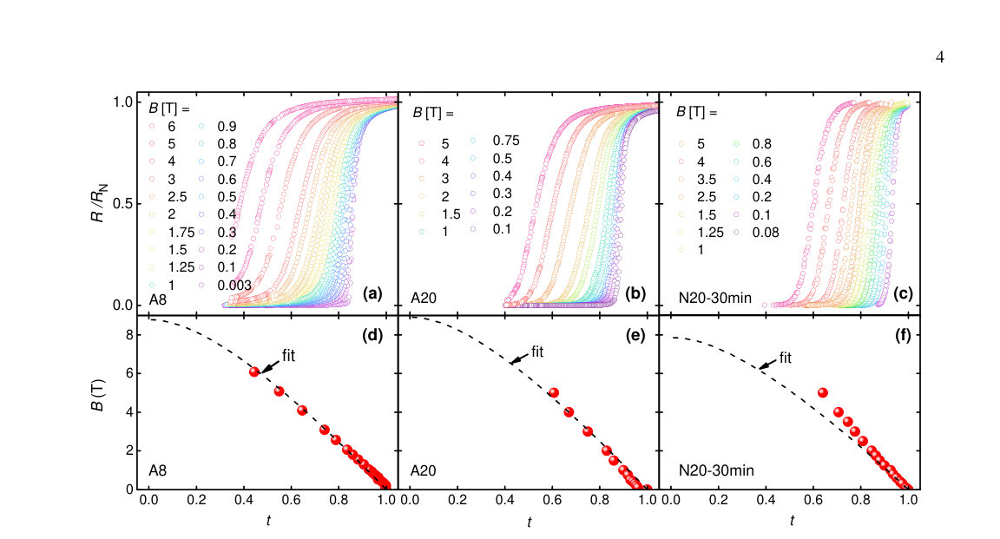
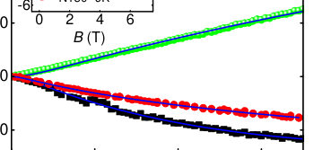
Summary. This work investigates how thermal annealing modifies the superconducting properties of non-centrosymmetric NbRe films. By analyzing both magnetotransport and critical field data, the authors demonstrate that annealing significantly amplifies spin-orbit coupling effects. This enhancement provides evidence for a mechanism protecting the unconventional superconductivity beyond standard theoretical bounds.
Why it may be interesting. The direct link established between structural modification (annealing) and the enhancement of a fundamental quantum interaction (spin-orbit coupling) that stabilizes unconventional superconductivity is highly relevant to understanding emergent quantum phenomena in condensed matter systems.
Main problem. The study investigates how thermal annealing affects superconducting and normal-state magnetotransport properties in non-centrosymmetric NbRe films, specifically focusing on the enhancement of spin-orbit effects.
Main result. Annealing significantly enhances spin-orbit-mediated quantum transport by increasing the relative spin-orbit scattering strength, leading to upper critical fields that exceed conventional theoretical limits and confirming strong antisymmetric spin-orbit coupling.
Method. The research combines structural characterization (XRD) with detailed magnetotransport measurements, analyzing data using the Werthamer–Helfand–Hohenberg framework for $B_{c2}(T)$ and the 3D Kawabata weak-localization/weak-anti-localization model.
Model / system. The physical system is $ ext{Nb}{0.18} ext{Re}$ thin films, which are non-centrosymmetric superconductors. The analysis relies on models describing quantum interference effects (WL/WAL) and superconducting pair-breaking mechanisms (WHH).
Key observables. Upper critical field $B_{c2}(T)$, normal-state magnetoconductivity ($\Delta\sigma/\sigma_0$), spin-orbit scattering strength ($B_{so}$), and the ratio $B_{so}/B_\phi$.
Important parameters / regimes. Annealing temperature, crystallite size increase (from $\sim 2$ nm to $\sim 10$ nm), and the observation that $B_{c2}(T)$ surpasses both orbital-limiting and Pauli paramagnetic limits.
Assumptions / limitations. The analysis assumes that magnetotransport deviations from conventional theory are due to enhanced spin-orbit coupling protecting the superconducting state against Zeeman splitting.
Figures summary. Figures show XRD patterns confirming crystallite growth upon annealing, $R(T)$ curves showing $ ext{T}_c$ changes, and magnetoconductivity plots demonstrating pronounced Weak Anti-Localization (WAL) behavior in annealed samples compared to as-grown ones.
Paper structure. The paper progresses by first characterizing structural changes via XRD; then analyzing superconducting properties using $B_{c2}(T)$ within the WHH framework, noting deviations from conventional limits; finally, confirming the underlying mechanism through normal-state magnetotransport analysis using the Kawabata WL/WAL model.
$\text{Nb}_{0.18}\text{Re}_{0.82}$ (NbRe) is a non-centrosymmetric superconductor with a transition temperature $T_\mathrm{c}$ reaching $9\text{ K}$ in bulk form. While bulk and single-crystalline NbRe exhibit signatures of multigap superconductivity, thin films generally display a single-gap superconducting state due to structural disorder and reduced crystallite dimensions. Here, we investigate the impact of thermal annealing on the superconducting and normal-state magnetotransport properties of NbRe films. The temperature dependence of the upper critical field, $B_{\mathrm{c2}}(T)$, is analyzed within the microscopic Werthamer--Helfand--Hohenberg (WHH) framework, while the normal-state magnetoconductivity is described using the three-dimensional Kawabata weak-localization/weak-anti-localization model. Annealing drives a pronounced change in the electronic response, manifested by a strong weak anti-localization behavior in the normal state and an upper critical field that surpasses both the conventional orbital-limiting field and the Pauli paramagnetic limit. The microscopic analysis reveals a strong intrinsic increase in the relative spin--orbit scattering strength, with the annealed film showing a significantly enhanced spin--orbit-to-dephasing field ratio. These findings provide direct, independent evidence that thermal modification of the NbRe microstructure successfully amplifies spin--orbit-mediated quantum transport, which acts as the key mechanism protecting the non-centrosymmetric superconducting state against paramagnetic pair-breaking well beyond conventional theoretical boundaries.
Authors: Martin Biehl, Nathaniel Virgo
Type: theory · Category: other · PDF: https://arxiv.org/pdf/2607.19090v1
Analysis basis: full PDF text, analyzed in chunks
Topic relevance: driven-dissipative phase transition 2/5 · non-equilibrium dynamics 2/5 · Frenkel-Kontorova 1/5 · analog quantum simulation 1/5 · correlated / nonlocal dissipation 1/5 · methods for driven-dissipative 1/5 · non-equilibrium universality 1/5
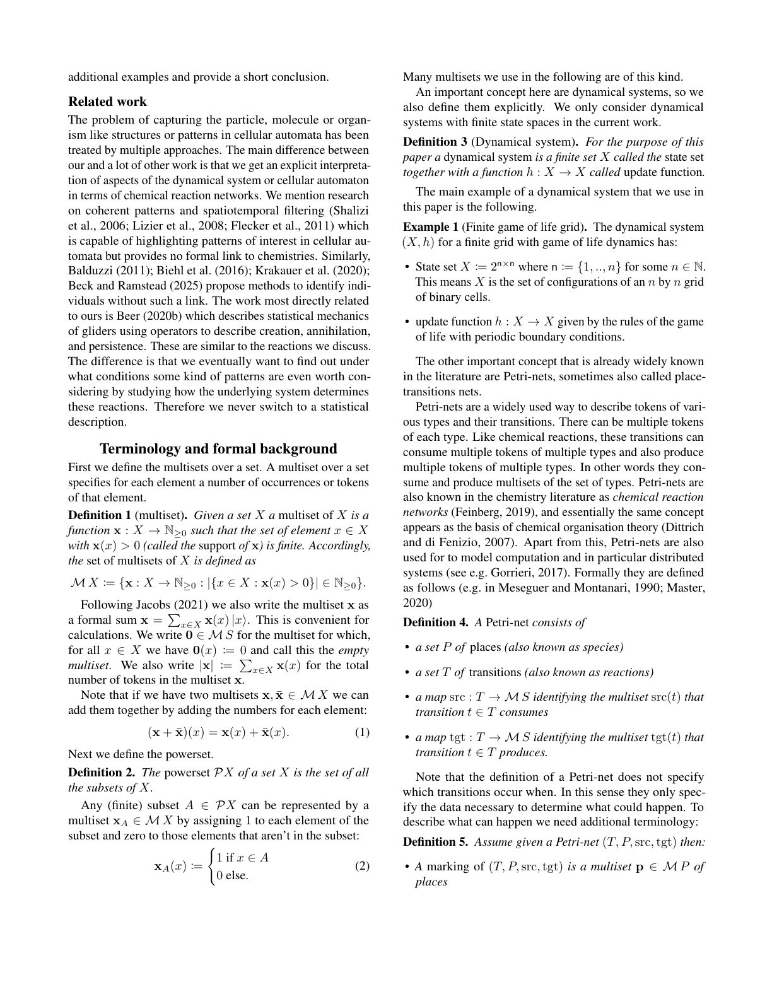
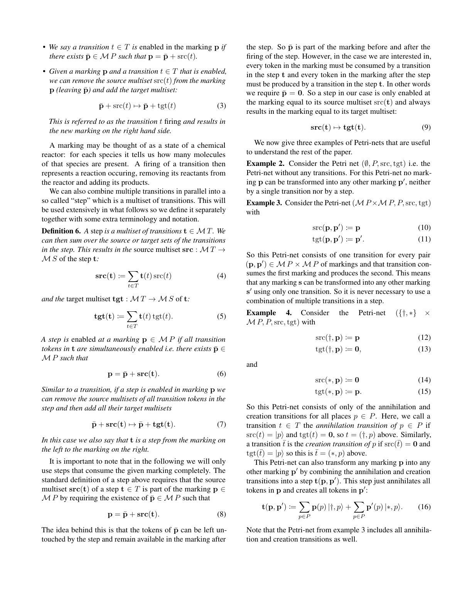
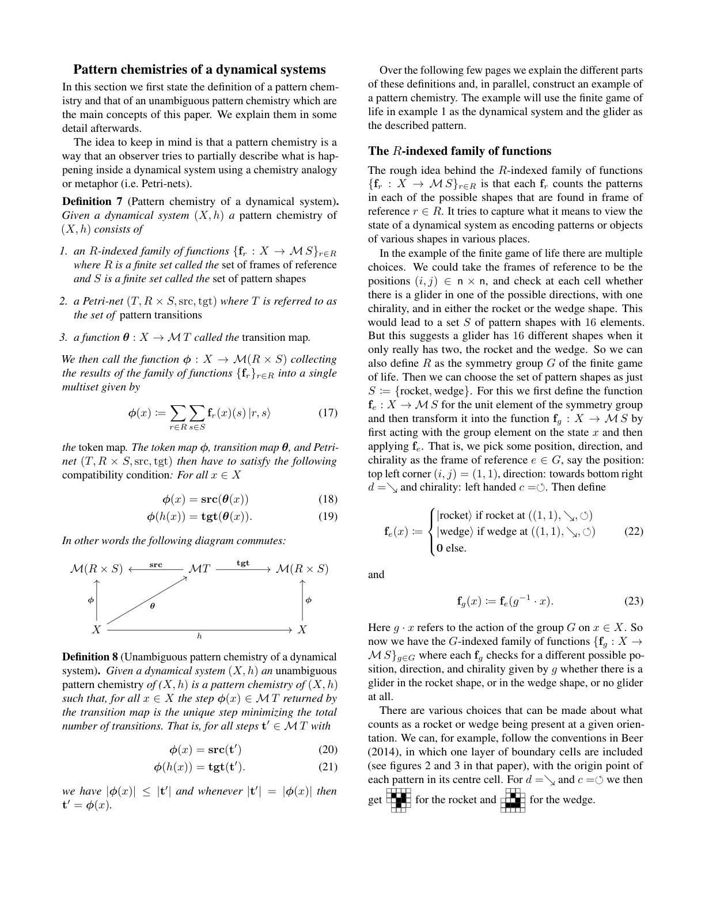
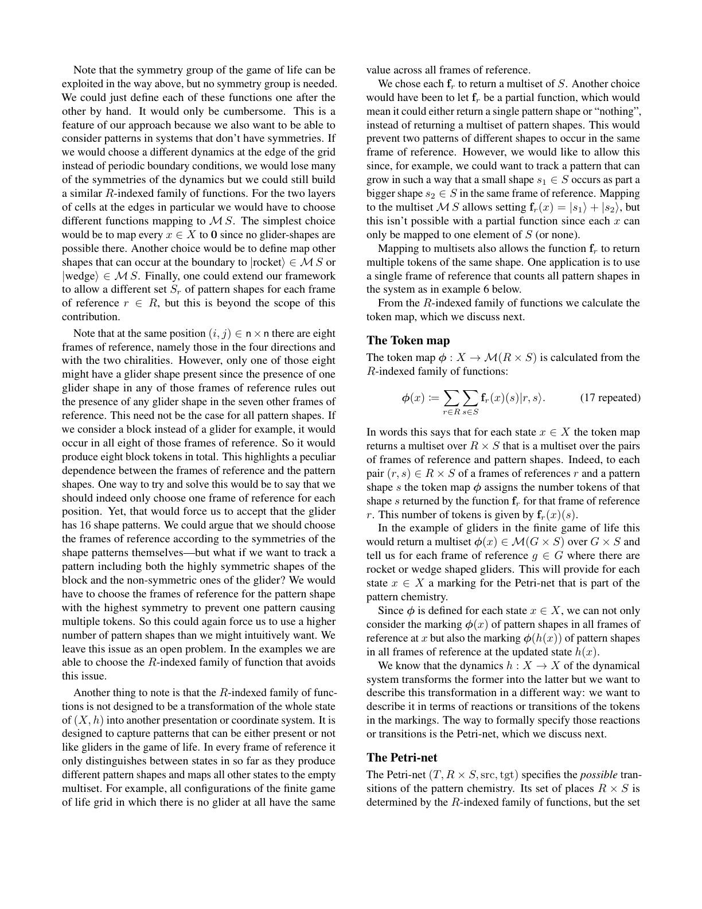
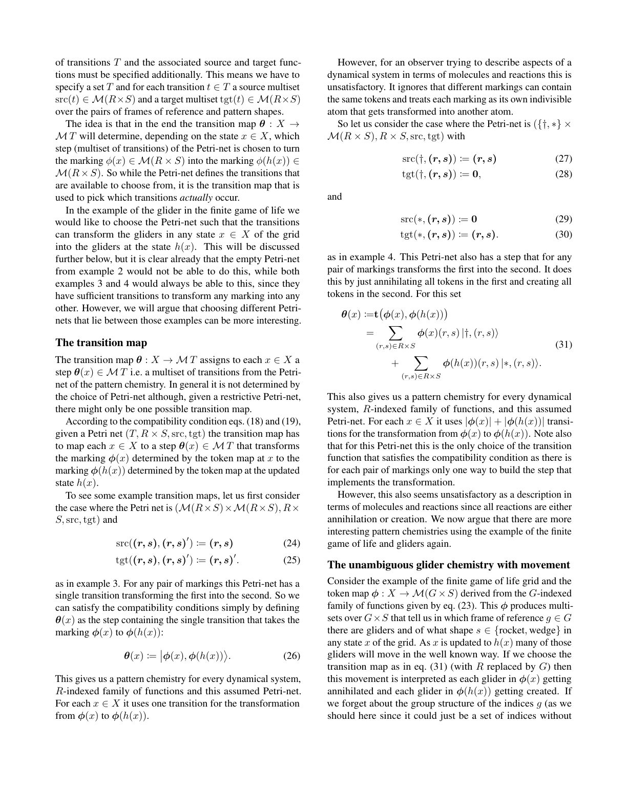
Summary. The paper introduces 'pattern chemistry' as a method to describe any dynamical system using the language of chemical reactions and Petri nets. It formalizes this by mapping system states to counts of observable patterns (tokens). The central technical achievement is defining an 'unambiguous' chemistry, which requires that the state update must correspond to a unique, minimal set of underlying transitions.
Why it may be interesting. This work provides a highly abstract mathematical formalism connecting general discrete dynamics (like CA) to chemical reaction network theory. The focus on minimizing transition counts for uniqueness is relevant to defining fundamental physical processes in complex many-body or open quantum systems where minimal energy paths are sought.
Main problem. The work aims to develop a formal framework, termed 'pattern chemistry,' to describe general dynamical systems using terminology analogous to chemical reaction networks.
Main result. The authors propose that for a pattern chemistry to be well-defined and physically meaningful, the transition map must yield a unique minimal set of reactions required to transform the state's observed patterns from time $t$ to time $t+1$.
Method. They model the system using Petri nets and token maps ($\phi$), where the state is mapped to counts of observable 'patterns' (shapes in specific frames of reference). The core method involves enforcing compatibility conditions between the source and target markings derived from the dynamical update function.
Model / system. The general model is an abstract discrete dynamical system $(X, h: X o X)$. Specific examples include analyzing gliders within Conway's Game of Life cellular automaton, which serves as a concrete testbed for the framework.
Key observables. The primary observables are the 'token map' $\phi(x)$, which is a multiset counting occurrences of specific patterns (shapes) across different frames of reference at state $x$.
Important parameters / regimes. The definition relies on specifying the set of possible pattern shapes ($S$) and the frames of reference ($R$), as well as the structure of the underlying Petri net transitions.
Assumptions / limitations. The framework is currently restricted to finite dynamical systems because multisets are defined with finite support. A key assumption for 'unambiguous' chemistry is that the minimal set of required transitions must be unique.
Figures summary. Not specified in detail, but examples involve illustrating how pattern counts (markings) evolve through specific transition rules derived from cellular automaton updates.
Paper structure. The paper progresses by first establishing the general chemical metaphor for dynamical systems, then formalizing this using Petri nets and token maps ($\phi$), developing the concept of 'unambiguous' chemistry via minimal transitions, and finally testing these concepts on known systems like gliders in Game of Life.
Chemistry describes aspects of the universe in terms of molecules and their reactions. In this exploratory work we present a way to describe aspects of any dynamical system in similar terms. To describe a dynamical system in this way three decisions have to be made. The first is how many different "places" there are at which molecules or chemical species can occur; the second is how to determine the species present (or not) at each place; and the third is the set of transitions and reactions that can occur between the species in the various places. For these choices to be compatible with the state update of the dynamical system each state must be able to determine transitions that take the currently occurring molecules to those occurring in the updated state. We also propose an additional requirement that there is always a unique way to choose the least amount of transitions occurring during state updates. We discuss gliders in the game of life cellular and argue that when following their definition of according to Randall Beer they satisfy the additional criterion as well. We also point out some issues with the approach.
Authors: Anagha Gopinath, Arpan De, Dipak Maity, Jyoti Mohanty
Type: both · Category: other · PDF: https://arxiv.org/pdf/2607.18733v1
Analysis basis: full PDF text, analyzed in chunks
Topic relevance: driven-dissipative phase transition 2/5 · Kondo & dissipative impurity 1/5 · analog quantum simulation 1/5 · correlated / nonlocal dissipation 1/5 · correlated cavity matter 1/5 · methods for driven-dissipative 1/5 · non-equilibrium dynamics 1/5
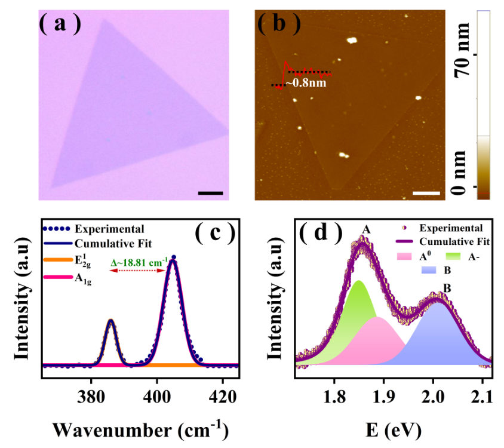
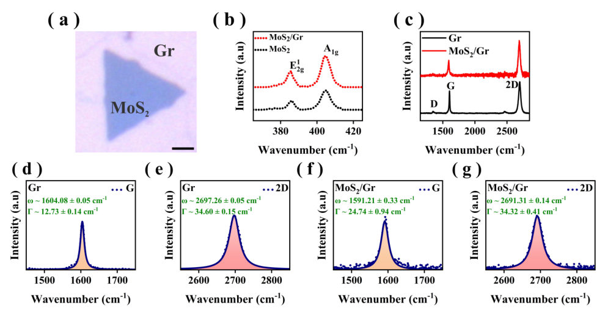
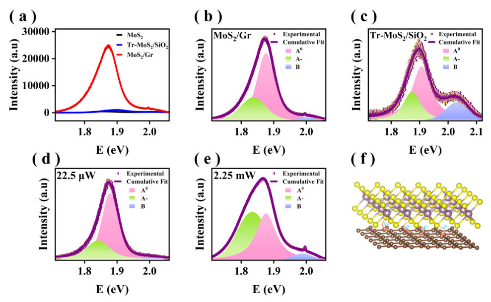
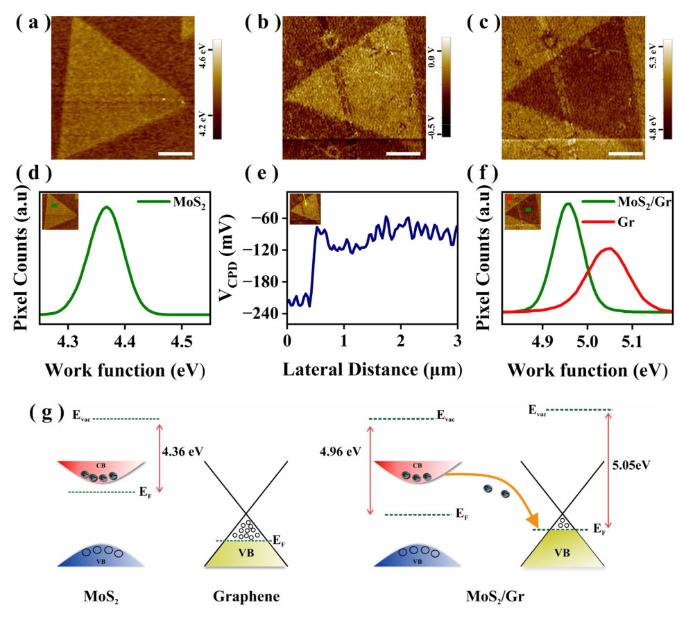
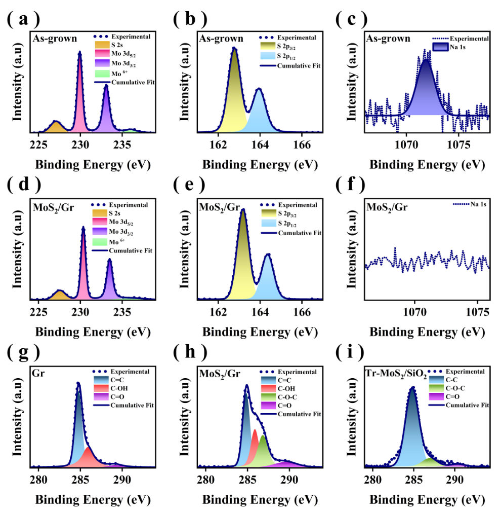
Summary. This work reports an anomalous enhancement of photoluminescence in MoS2/graphene heterostructures achieved via a polystyrene-assisted wet transfer. The mechanism is attributed to interfacial charge transfer from n-doped MoS2 to graphene, confirmed by shifts in electronic signatures like the work function and Raman modes. This establishes the wet transfer process as a practical method for engineering optoelectronic devices.
Why it may be interesting. The study provides concrete, measurable evidence of controlling electronic doping and exciton recombination pathways in 2D heterostructures using simple wet-transfer chemistry, which is highly relevant to open quantum systems modeling where interface coupling dictates energy levels.
Main problem. Interlayer charge transfer between MoS2/graphene heterostructures typically quenches photoluminescence (PL), limiting their use in light-emitting devices. The goal was to achieve anomalous PL enhancement.
Main result. The study achieved a striking, anomalous PL enhancement by demonstrating that the polystyrene-assisted wet transfer process facilitates charge transfer from n-doped MoS2 to graphene, leading to trion-to-exciton conversion in MoS2.
Method. A combination of experimental techniques (PL spectroscopy, KPFM, Raman, XPS) and theoretical calculations (DFT Bader analysis) was employed to characterize the electronic changes at the interface.
Model / system. The physical system is a van der Waals heterostructure composed of monolayer MoS2 integrated with graphene. The process involves using polystyrene-assisted wet transfer as an interface engineering strategy.
Key observables. PL enhancement (up to 54-fold), work function shift ($\sim 600 ext{ meV}$ increase in $ ext{MoS}_2$), shifts in graphene G/2D Raman modes, and detection of OH/epoxy functionalization on graphene.
Important parameters / regimes. The charge transfer mechanism is quantified by Bader charge analysis, showing electron accumulation at specific functional groups on the graphene side.
Assumptions / limitations. The wet transfer method is presented as a practical, scalable interface engineering strategy that overcomes limitations of previous doping/tuning methods.
Figures summary. Figures show optical and AFM images of MoS2 flakes; Raman spectra confirm characteristic modes for both materials; KPFM data quantify the work function shift upon heterostructure formation.
Paper structure. The paper establishes the problem (PL quenching), details the experimental setup ($ ext{PS}$-assisted transfer), presents multi-modal characterization evidence (KPFM, Raman, PL) confirming charge transfer, and concludes by proposing this method as a scalable solution for enhanced excitonic emission.
Van der Waals MoS2 graphene heterostructures are compelling candidates for high performance electronic and optoelectronic device applications. However, the interlayer charge transfer typically quenches the photoluminescence of monolayer MoS2, limiting the use of these heterostructures in light emitting applications. In this work, we report an anomalous photoluminescence enhancement in n-type monolayer MoS2 by integrating it with monolayer graphene via polystyrene assisted wet transfer process. Photoluminescence spectroscopy reveals a dominant trion to exciton conversion in the heterostructure. Kelvin probe force microscopy shows a 600 meV increase in the work function of MoS2 upon heterostructure formation. This work function shift, together with the higher work function of graphene, signifies electron transfer from MoS2 to graphene. Shifts in the graphene G and 2D Raman modes further corroborate the interlayer charge transfer. Hydroxyl and epoxy functionalization of graphene following heterostructure formation is evidenced by X ray photoelectron spectroscopy. DFT based Bader charge analysis quantifies the role of these functional groups in facilitating interlayer charge transfer. Collectively, our findings establish polystyrene assisted wet transfer as a practical interface engineering strategy for enhancing excitonic emission in MoS2 graphene heterostructures, thereby advancing their potential for scalable optoelectronic devices.
Authors: Santanu Samai, Debangan Sarkar, Abhijit Halder, T. Taniguchi, K. Watanabe, Subroto Mukerjee, Saurabh Kumar Srivastav, Anindya Das
Type: experiment · Category: other · PDF: https://arxiv.org/pdf/2607.19205v1
Analysis basis: full PDF text, analyzed in chunks
Topic relevance: analog quantum simulation 2/5 · non-equilibrium dynamics 2/5 · correlated / nonlocal dissipation 1/5 · driven-dissipative phase transition 1/5 · methods for driven-dissipative 1/5 · non-equilibrium universality 1/5
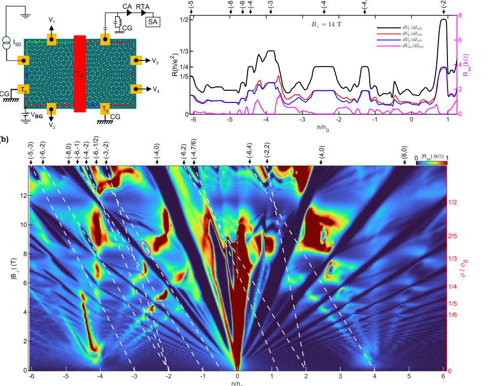
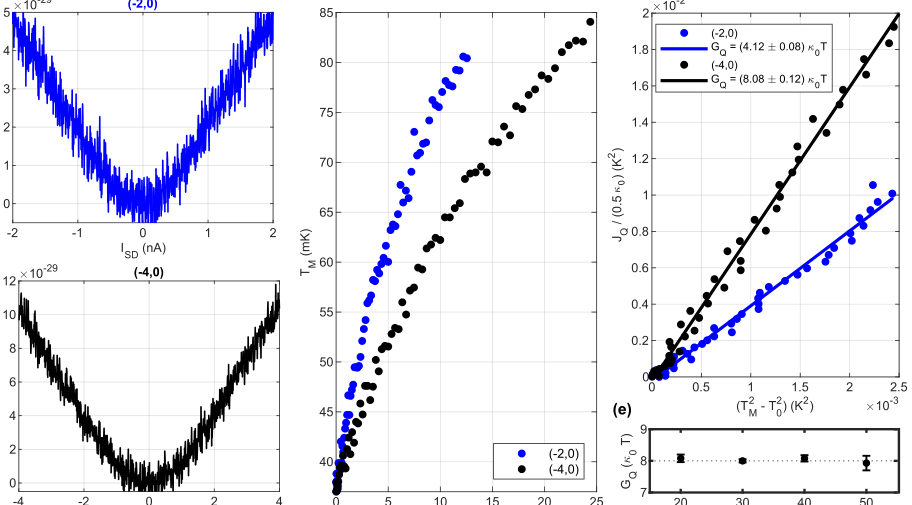
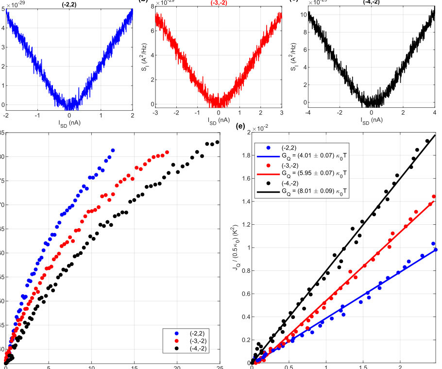
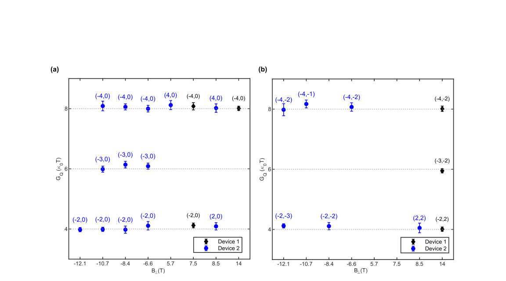
Summary. The researchers measured the thermal conductance of topologically non-trivial states (like Chern insulators) in moiré graphene superlattices using advanced noise thermometry. They found that this heat flow is quantized based only on the system's topological Chern number, establishing thermal conductance as a universal diagnostic tool for moiré topology.
Why it may be interesting. This work provides a direct, measurable signature—quantized heat flow—that serves as a stringent probe for understanding and verifying exotic topological phases predicted in moiré materials, bridging electrical and thermal transport physics.
Main problem. To determine if heat transport in topological states (Quantum Hall, Chern Insulator) realized in moiré superlattices is universal, mirroring the established quantization of electrical transport.
Main result. The thermal conductance ($G_Q$) was found to be quantized in units determined solely by the Chern number ($t$), confirming universal topological heat transport.
Method. Thermal conductance was measured using highly sensitive Johnson-noise thermometry, analyzing excess thermal noise and dissipated power as a function of source current.
Model / system. The study uses bilayer graphene on hexagonal boron nitride (hBN) moiré superlattices, which create Hofstadter spectra hosting various topological states parameterized by Chern numbers ($t$).
Key observables. Thermal conductance ($G_Q$), quantized values relative to the thermal quantum ($\kappa_0 T$), and electron temperature ($T_M$) derived from noise measurements.
Important parameters / regimes. Moiré wavelength ($\sim 14 ext{ nm}$), magnetic field ($B_\perp$), Chern number ($t$), and the heat Coulomb blockade (HCB) effect.
Assumptions / limitations. The quantization is assumed to be robust across different microscopic origins of topological states, though deviations at high $|t|$ are attributed to HCB or measurement limits.
Figures summary. Figures show device schematics, electrical transport measurements identifying QH/CI states, and thermal conductance plots confirming quantized plateaus for various Chern numbers.
Paper structure. The work progresses by first establishing the physical platform (BLG/hBN moiré superlattice) and characterizing topological states via electrical transport. It then details the advanced noise thermometry technique to measure $G_Q$, culminating in the demonstration of universal quantization across different topological regimes.
When electrons are subjected simultaneously to a magnetic field and a periodic potential, they form the fractal Hofstadter spectrum, whose topological gaps host quantum Hall and Chern insulating states with distinct Chern numbers. While electrical transport has established the topology of these states, whether their heat transport is likewise universal has remained unexplored. Here, we measure the thermal conductance of quantum Hall, Chern insulator, and interaction-driven symmetry-broken Chern insulator states in a bilayer graphene-hexagonal boron nitride moiré superlattice with a moirè wavelength of $\sim$14 nm using Johnson-noise thermometry. We find that the thermal conductance ($G_Q$) is quantized in units of the thermal conductance quantum ($G_Q = tκ_0T$) and is determined solely by the Chern number ($t$), independent of the microscopic origin of the topological state. By directly revealing universal topological heat transport in Hofstadter bands, our work establishes thermal conductance as a stringent probe of moiré topological matter and provides a route to investigating more exotic phases, including fractional Chern insulators.
Authors: Taohua Luo, Zhenya Yan, Guoqiang Zhang
Type: theory · Category: other · PDF: https://arxiv.org/pdf/2607.19119v1
Analysis basis: full PDF text, analyzed in chunks
Topic relevance: non-equilibrium dynamics 2/5 · non-equilibrium universality 2/5 · Keldysh / 2PI / non-Gaussian methods 1/5 · driven-dissipative phase transition 1/5 · methods for driven-dissipative 1/5
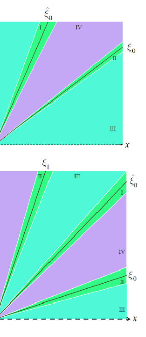
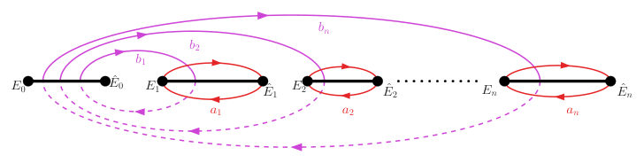
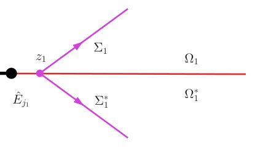
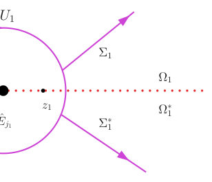
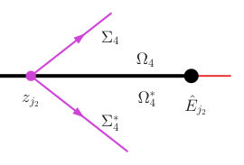
Summary. This work determines how solutions to the defocusing Hirota equation evolve over very long times when constrained by a finite-genus algebro-geometric background. It employs advanced mathematical machinery, specifically Riemann-Hilbert analysis and nonlinear steepest descent, to derive precise asymptotic formulas across different spatial and temporal regimes.
Why it may be interesting. While highly mathematical, the techniques used—integrable systems, Riemann-Hilbert methods, and asymptotics—are foundational tools applicable to analyzing non-equilibrium dynamics in quantum field theory or complex many-body systems where long-time behavior is crucial.
Main problem. The paper investigates the long-time asymptotic behavior of solutions to the defocusing Hirota equation when defined on a finite-genus algebro-geometric background.
Main result. Asymptotic formulas are derived for the solution in four distinct space-time regions, showing leading terms governed by the finite-genus background and specific decaying corrections ($t^{-1/3}, t^{-1/2}$).
Method. The analysis heavily relies on the Riemann-Hilbert (RH) formulation combined with the Deift-Zhou nonlinear steepest descent method.
Model / system. The system is governed by the defocusing Hirota equation, a higher-order integrable extension of the NLS equation. The background structure is defined by an algebro-geometric solution on a hyperelliptic Riemann surface of genus n.
Key observables. Long-time asymptotic behavior $q(x, t)$, correction terms ($t^{-1/3}, t^{-1/2}$), and the leading-order phase-shifted algebro-geometric solution.
Important parameters / regimes. Genus of the background (n), time $t o \infty$, and the specific regions defined by the RH problem's critical values (I, II, III, IV).
Assumptions / limitations. The initial condition must match the finite-genus algebro-geometric background outside a compact set; the analysis assumes sufficient smoothness for the steepest descent method to apply.
Figures summary. Figures illustrate the four distinct asymptotic regions (I-IV) in the space-time plane and show contours related to the global parameterization $E(z)$.
Paper structure. The paper establishes the problem setup using the Hirota equation, develops the RH formulation for the background, applies nonlinear steepest descent analysis across different critical regions (Transition I/II, Zakharov-Manakov III, Fast Decay IV), and derives explicit asymptotic formulas in each region.
In this paper, we investigate the long-time asymptotics for the solution of the Cauchy problem of the defocusing Hirota equation on a finite-genus algebro-geometric background in the whole $(x,t)$-half-plane, whose method is mainly based on a Riemann-Hilbert (RH) formulation and Deift-Zhou nonlinear steepest descent method. The critical values of the phase function in the associated RH problem divide the space-time plane into four regions, in which the leading-order term is given by a phase-shifted finite-genus algebro-geometric solution. The subleading behavior depends on the region: the correction is of order $t^{-1/3}$ and is governed by a Painlevé-XXXIV model RH problem in the transition regions; the leading radiation is of order $t^{-1/2}$ in the Zakharov--Manakov region; and the error is $O(t^{-1})$ in the fast-decay region. These results can also be extended to other higher-order members of the AKNS hierarchy.
Authors: Yoonseok Hwang, Saavanth Velury, Taylor L. Hughes
Type: theory · Category: other · PDF: https://arxiv.org/pdf/2607.18386v1
Analysis basis: full PDF text, analyzed in chunks
Topic relevance: analog quantum simulation 2/5 · driven-dissipative phase transition 1/5 · methods for driven-dissipative 1/5
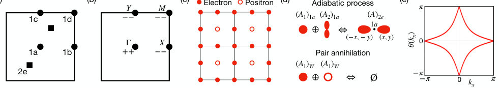
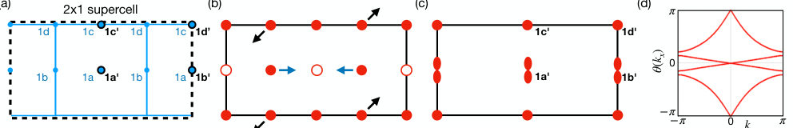
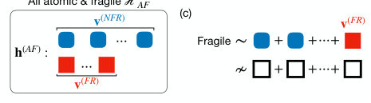
Summary. This theoretical work rigorously proves that 'fragile topology' is not fundamentally stable against lattice refinement. By analyzing symmetry-protected band structures using momentum-space data, the authors demonstrate that increasing the unit cell size (supercell construction) allows for an adiabatic deformation that trivializes the topological phase into a simple atomic insulator.
Why it may be interesting. While focused on condensed matter band theory rather than quantum information protocols, the rigorous mathematical tools developed for tracking topological stability under lattice changes (analogous to Hamiltonian perturbations) are highly relevant to understanding robustness in engineered quantum systems.
Main problem. The paper investigates the stability of 'fragile topological phases' under lattice enlargement (unit-cell refinement), aiming to distinguish them from stable topological phases or trivial atomic insulators.
Main result. It establishes that fragile topology possesses only finite stability, as all such phases can be shown to become adiabatically connected to an atomic insulator through a sufficiently large supercell enlargement ($N_{sc}=4$ in one example).
Method. The analysis uses a systematic framework involving Hilbert-basis analysis of momentum-space symmetry data ($\mathbf{v} = ext{BR} \cdot \mathbf{m}$) and models unit-cell enlargement as an integer linear map to track the trivialization of topological invariants.
Model / system. The study is applied to crystalline band topology, specifically analyzing 2D wallpaper groups using a tight-binding model framework derived from Wannier orbitals in an electron-positron picture.
Key observables. Symmetry-data vectors ($\mathbf{v}$), multiplicity vectors ($\mathbf{m}$), and the Wilson-loop spectrum $\{ heta_a(\mathbf{k})\}$ are key diagnostics for topological characterization and trivialization.
Important parameters / regimes. The supercell index ($N_{sc}$) is a critical parameter, as increasing it can drive the system toward a trivial state. The symmetry group (e.g., $p2$, $p4mm$) dictates the specific mathematical constraints.
Assumptions / limitations. The analysis assumes that adiabatic deformations preserve both wallpaper-group symmetry and the bulk energy gap, allowing for the systematic tracking of topological invariants via symmetry data.
Figures summary. Figures illustrate Wyckoff positions, Brillouin zones with high-symmetry momenta, electron-positron configurations showing pair annihilation (trivialization), and supercell structures demonstrating band folding upon enlargement.
Paper structure. The paper develops from establishing the general instability criterion for fragile topology under unit-cell enlargement to providing detailed mathematical machinery using symmetry data vectors. It then applies this framework to specific 2D wallpaper groups, culminating in explicit calculations showing trivialization at finite supercell sizes.
Fragile topological phases become trivial upon the addition of suitable trivial bands, distinguishing them from stable topological phases. Nevertheless, various response phenomena and material realizations have been proposed for fragile phases. At the same time, many of these phenomena can also occur in atomic insulators, leaving open the question of what properties are specific to fragile phases. Enlarging the unit cell offers a natural perspective on this question. Band folding increases the number of bands in a manner analogous to adding trivial bands. In this work, we establish a systematic framework for determining the stability of fragile topology under unit-cell enlargement. We first establish a systematic criterion for trivialization under enlargements compatible with space-group symmetry, grounded in a physical electron-positron picture and formulated through a Hilbert-basis analysis of momentum-space symmetry data. We then show that, for all two-dimensional wallpaper groups, with or without spin-orbit coupling and/or time-reversal symmetry, every symmetry-indicated fragile phase is adiabatically connected to an atomic insulator in a suitable finite supercell and can therefore be trivialized by an arbitrarily small symmetry-preserving perturbation. Our results reveal that fragile topology has only finite stability under translation-symmetry refinement. This highlights that the fate of a fragile phase can depend on translation-symmetry-breaking perturbations, such as charge-density-wave ordering, and suggests that physical signatures insensitive to translation refinement are unlikely to uniquely characterize fragile topology.
Authors: Hanqi Dong, Boris A. Malomed, Zhiwei Men
Type: theory · Category: other · PDF: https://arxiv.org/pdf/2607.18858v1
Analysis basis: full PDF text, analyzed in chunks
Topic relevance: driven-dissipative phase transition 1/5 · interference shaping light 1/5
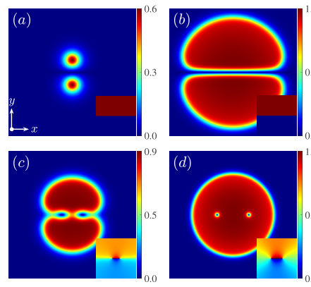
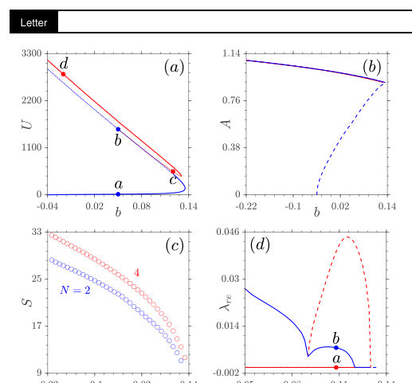
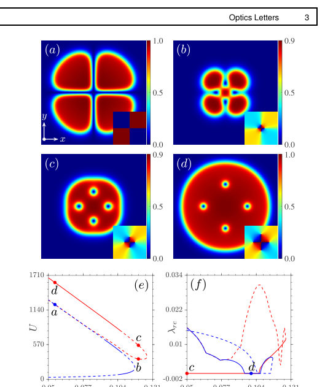
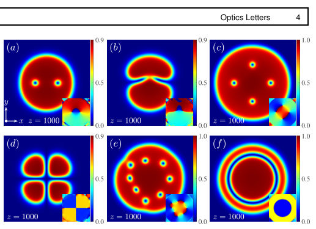
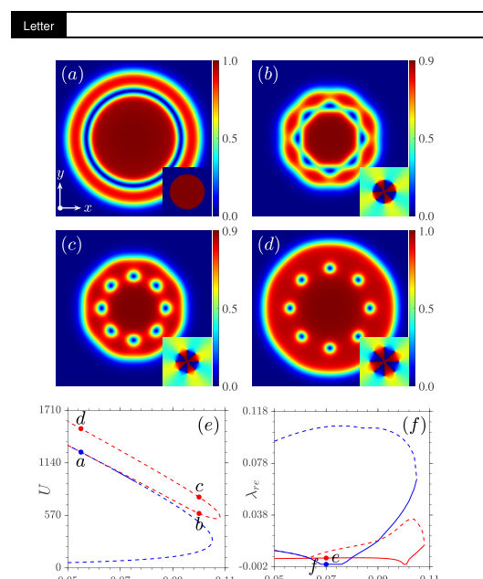
Summary. This paper analyzes the complex behavior of vortex clusters within cubic-quintic nonlinear media under harmonic confinement. By combining linear stability analysis with numerical simulations, the authors map out the formation mechanisms for these structures. The findings confirm the stability of specific vortex cluster configurations across broad parameter ranges.
Why it may be interesting. This work directly addresses structured light phenomena—vortex formation and soliton stability—in nonlinear media, which is highly relevant to quantum optics, Bose-Einstein condensates (BECs), and nonlinear wave physics.
Main problem. The study investigates the existence, stability, and propagation dynamics of multipole solitons and vortex clusters.
Main result. Vortex clusters with N=2 and N=4 remain stable over a wide range of the propagation constant, revealing a specific formation mechanism for these structures.
Method. The research employs rigorous linear stability analysis on an eigenvalue problem, which is corroborated by direct numerical simulations of perturbed soliton propagation.
Model / system. The system models nonlinear wave propagation in cubic-quintic (CQ) media confined by a harmonic trapping potential. The dynamics are governed by the scaled nonlinear Schrödinger equation.
Key observables. Power (U), mode amplitude (|psi|_max), geometric distance between vortex pivots (S), and the real part of the perturbation growth rate ($\lambda_{ ext{re}}$).
Important parameters / regimes. The propagation constant ($b$) is a key parameter varied to map out stability regions; the nonlinearity type is cubic-quintic.
Assumptions / limitations. The analysis relies on the CQ nonlinearity model and assumes specific forms for input vortex structures during the bifurcation process.
Figures summary. Figures illustrate absolute value/phase distributions of various solitons (dipole, VAV), plot Power vs. propagation constant ($b$) to show stability regions, and detail bifurcations between different soliton families.
Paper structure. The paper systematically analyzes the dynamics by first establishing the governing equation and conserved quantities, then applying linear stability analysis to predict stable states, followed by numerical simulations to confirm these predictions across various vortex cluster sizes (N).
We address the existence, stability, and propagation dynamics of multipole solitons and vortex clusters in cubicquintic media subject to a harmonic trapping potential.We found that vortex clusters comprising N off centered vortices with alternating topological charges m equal to +(-)1, evenly distributed on a ring, can bifurcate from a multipole soliton for N less than or equal to 4 and from a second-order ring soliton for N greater than 4. Rigorous linear stability analysis, corroborated by direct numerical simulations, shows that upper branch vortex clusters with N equal to 2 and 4 remain stable over a wide range of the propagation constant. Thus, we reveal the formation mechanism of vortex clusters.
Authors: G. A. Bobkov, I. A. Shvets, I. V. Bobkova
Type: theory · Category: other · PDF: https://arxiv.org/pdf/2607.19308v1
Analysis basis: full PDF text, analyzed in chunks
Topic relevance: Keldysh / 2PI / non-Gaussian methods 1/5




Summary. This work develops a unified tight-binding model for misfit layered compounds (MLCs) to accurately describe their electronic structure. By incorporating an emergent interlayer spin-orbit coupling—a feature missed by simpler models—the theory successfully explains the mechanism behind Ising-protected superconductivity, establishing MLCs as intrinsically coupled 3D quantum materials.
Why it may be interesting. The concept of emergent long-range coupling mediated by an intervening material layer is highly relevant for understanding heterostructures, interfaces in quantum materials, and engineering superconducting properties through structural design.
Main problem. Developing a comprehensive theoretical description for the electronic structure and the mechanism behind Ising-protected superconductivity in misfit layered compounds (MLCs).
Main result. The paper shows that intervening tetragonal layers mediate an emergent interlayer spin-orbit coupling, which is crucial for reproducing DFT band structures and microscopically explaining the enhancement of the in-plane critical magnetic field ($H_{c,\parallel}$).
Method. A unified tight-binding model is constructed and parameterized using extensive Density-Functional Theory (DFT) calculations. Superconductivity analysis is performed via Bogoliubov–de Gennes equations.
Model / system. The system is Misfit Layered Compounds (MLCs), treated as intrinsically coupled 3D materials rather than isolated 2D layers. The model incorporates both intralayer and emergent interlayer spin-orbit coupling terms into the Hamiltonian.
Key observables. In-plane critical magnetic field ($H_{c,\parallel}$), electronic band structure, and superconducting gap properties.
Important parameters / regimes. Interlayer coupling strength, intrinsic spin-orbit coupling (ISOC) parameters ($\alpha(p)$), and the chemical/structural details of the intervening layers.
Assumptions / limitations. The standard assumption that the intervening layers electronically isolate each TMD layer is incorrect; the model captures physics beyond this 'rigid-band' picture.
Figures summary. Figure 1 illustrates atomic structures for different MLC configurations (e.g., $1 ext{H}$-TMD monolayer, $2 ext{H}$-TMD bilayer) and the coupling mechanism via tetragonal layers. Figure 2 compares band structures for $2 ext{H}$ vs. hypothetical $1 ext{H}+1 ext{H}$ bilayers.
Paper structure. The paper establishes the physical problem in MLCs, develops a unified tight-binding Hamiltonian incorporating interlayer SOC derived from DFT, analyzes how this coupling affects band structure (comparing different stacking symmetries), and finally applies the model to superconductivity via Bogoliubov–de Gennes calculations to explain Ising protection.
Misfit layered compounds (MLCs) offer a unique bulk platform for realizing exotic quantum states typically associated with two-dimensional transition-metal dichalcogenides (TMDs), most notably Ising-protected superconductivity. Yet a theoretical description capturing their electronic structure beyond the simplistic picture of electronically isolated TMD layers has been lacking. Here, we develop a unified tight-binding model for metal dichalcogenide-based MLCs, parameterized by extensive density-functional theory (DFT) calculations across multiple structural configurations and chemical compositions. We show that the intervening tetragonal layers play an active role beyond charge reservoirs: they mediate a significant interlayer spin-orbit coupling entirely absent in the standard rigid-band picture. This emergent interlayer spin-orbit coupling is essential for reproducing the DFT band structure of bulk MLCs and, when incorporated into Bogoliubov--de Gennes calculations, provides a microscopic mechanism for the Ising protection of superconductivity by strongly enhancing the in-plane critical field. Our framework establishes MLCs as a distinct class of three-dimensional materials with intrinsically coupled layers and emergent spin-orbit phenomena.
Authors: D. B. Zhou, Y. Yang, L. F. Feng, M. F. Zhao, Z. Y. Jia, K. H. Gao
Type: experiment · Category: strongly correlated electrons · PDF: https://arxiv.org/pdf/2607.18685v1
Analysis basis: full PDF text, analyzed in chunks
Topic relevance: non-equilibrium dynamics 1/5
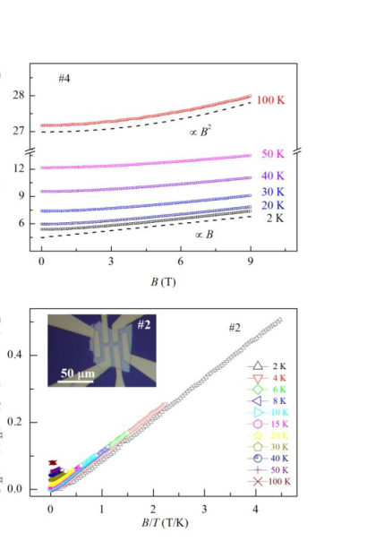
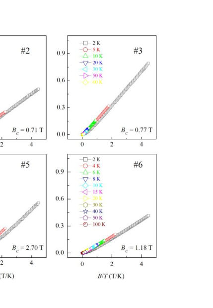
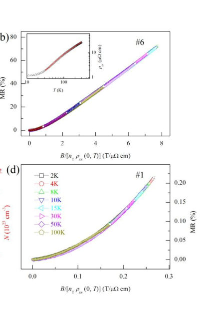
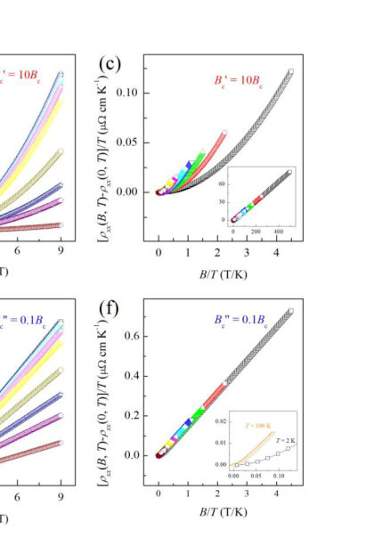
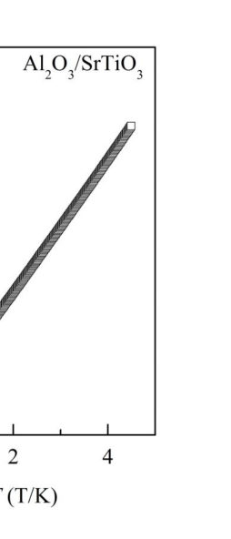
Summary. This experimental study investigates whether magnetoresistance scaling observed in materials like $ ext{NiTe}_2$ is evidence of a strange-metal state. By analyzing the dependence of this scaling on the crossover field, the authors argue that the scaling is merely a consequence of linear magnetoresistance dominating at high fields, not a unique quantum signature.
Why it may be interesting. While focused on condensed matter transport, the rejection of a 'strange metal' classification based on a specific scaling law provides important methodological guidance for interpreting complex quantum transport measurements in strongly correlated systems.
Main problem. The study aims to determine if the observed quadrature magnetoresistance (MR) scaling is a unique signature of the strange-metal state or if it reflects conventional transport physics.
Main result. The authors conclude that the quadrature scaling merely reflects the presence and dominance of linear magnetoresistance, rather than indicating true strange metallicity. This conclusion is supported by evidence suggesting conventional Fermi-liquid behavior in the measured materials.
Method. Magnetotransport measurements were performed on $ ext{NiTe}2$ nanosheets, analyzing resistivity ($ ho$) vs. temperature ($T$) and MR scaling with magnetic field ($B$).
Model / system. The research uses physical samples like $ ext{NiTe}_2$ nanosheets and $ ext{SrTiO}_3$ heterostructures to measure magnetotransport properties across varying temperatures and fields.
Key observables. Quadrature magnetoresistance scaling collapse ($ ext{MR}$ vs $B/T$), crossover field ($c_B$), resistivity ($ ho_{xx}$) vs $T$, and adherence to Extended Kohler's rule.
Important parameters / regimes. Crossover field ($c_B$), temperature dependence of fit parameters ($a, k$), and the Planckian dissipation constant ($\alpha$).
Assumptions / limitations. The analysis assumes that if the scaling holds only when linear MR dominates (i.e., $c_B$ is small), then the scaling is not a unique signature of strange metallicity.
Figures summary. Figures show $ ho_{xx}(T)$ and $ ext{MR}$ vs $B$, with key plots demonstrating the quadrature scaling collapse for multiple samples, alongside Kohler's rule analyses.
Paper structure. The paper systematically analyzes magnetotransport data across several samples, first establishing the observed scaling behavior, then testing it against conventional transport models (like Extended Kohler's rule), and finally using simulations to show that the scaling is mathematically linked only to linear MR dominance.
The quadrature scaling of magnetoresistance has been widely adopted as a hallmark of the strange metal state. However, whether this scaling signals quantum criticality or reflects conventional transport behavior remains controversial. Here, by systematically investigating the magnetotransport properties of NiTe2 nanosheets, we demonstrate that the quadrature scaling is not a unique signature of strange metallicity. We find that the scaling holds only when the crossover field , marking the transition from quadratic to linear magnetoresistance, is sufficiently small relative to the applied field range. Through controlled simulations, we show that the scaling emerges whenever linear magnetoresistance dominates, irrespective of its origin, and fails when the linear regime is inaccessible. This conclusion is supported by observations in SrTiO3 based heterostructures, where quadrature scaling appears despite the absence of strange metal behavior. Our results establish that the quadrature scaling merely reflects the presence of linear magneto resistance, urging caution in using this scaling as a diagnostic tool for exploring the strange metal state.
Authors: Andrei Muratov, Yevgeny Rakhmanov, Andrei Shilov, Igor Morozov, Yurii Aleshchenko
Type: experiment · Category: strongly correlated electrons · PDF: https://arxiv.org/pdf/2607.18876v1
Analysis basis: full PDF text, analyzed in chunks
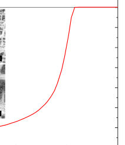
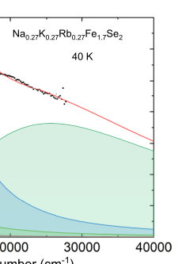
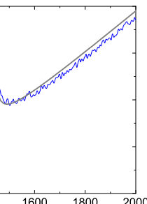
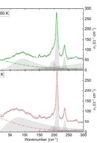
Summary. This work uses infrared spectroscopy on iron selenide single crystals to probe their electronic structure across superconducting transitions. By analyzing reflectance spectra, the researchers identified a persistent Fano resonance feature that suggests superconductivity and magnetic order coexist microscopically within the material. This challenges previous assumptions about mutual exclusion between these two quantum phenomena.
Why it may be interesting. The observation of persistent magnetic signatures alongside superconductivity in the optical spectrum provides crucial experimental evidence regarding the interplay between magnetism and pairing mechanisms in unconventional superconductors, which is a major topic in strongly correlated electron physics.
Main problem. The study investigates the optical properties of superconducting iron selenide single crystals to determine if superconductivity and antiferromagnetism can coexist microscopically.
Main result. The persistence of a Fano-shaped mode at 1430 cm-1 in both normal and superconducting states strongly suggests a mesoscopic coexistence between superconductivity and magnetic order in the material.
Method. Infrared Fourier-transform spectroscopy and spectroscopic ellipsometry were used to measure in-plane reflectance over a wide frequency range, analyzed using Drude-Lorentz modeling.
Model / system. The physical system is the alkali-metal doped iron selenide single crystal, Na$_{0.27}$K$_{0.27}$Rb$_{0.27}$Fe$_{1.7}$Se$_2$, which exhibits superconductivity ($T_c \approx 34.3$ K) and magnetic superstructure.
Key observables. In-plane reflectance $R(\omega)$, optical conductivity $\sigma_1(\omega)$, plasma frequency, scattering rate, and dc resistivity as a function of temperature.
Important parameters / regimes. $T_c \approx 34.3$ K; Fano mode at $1430 ext{ cm}^{-1}$; Temperature range: $4-300$ K.
Assumptions / limitations. The normal-state response is analyzed using a single Drude component model, and Kramers-Kronig analysis extends data to higher frequencies.
Figures summary. Figures show temperature dependence of AC magnetic susceptibility ($\chi'$) and absolute reflectance spectra at various temperatures relative to $T_c$, highlighting spectral features like the Fano peak and plasma edge formation.
Paper structure. The paper analyzes the normal-state response using Drude modeling, reports on specific optical features (Fano mode, low-frequency bands), and uses these measurements across the superconducting transition temperature range to argue for coexisting electronic states.
With infrared Fourier-transform spectroscopy and spectroscopic ellipsometry we investigated the in-plane reflectance of the superconducting Na$_{0.27}$K$_{0.27}$Rb$_{0.27}$Fe$_{1.7}$Se$_2$ single crystals with a critical temperature $T_c\approx 34.3$ K over a broad frequency range at temperatures of 4--300 K. The normal-state response of Na$_{0.27}$K$_{0.27}$Rb$_{0.27}$Fe$_{1.7}$Se$_2$ is analyzed by a Drude-Lorentz model with one Drude component. The temperature dependences of the plasma frequency, optical conductivity, scattering rate, and dc resistivity of the Drude component in the normal state are presented. We report a Fano-shaped mode at 1430~cm$^{-1}$ indicating a coupling of the discrete mode presumably related to some electronic transition to a two-magnon continuum as well as a low-frequency broad band assigned to the acoustic magnon branch of the antiferromagnetic superstructure. These features persist in the reflectance in both the normal and superconducting states suggesting a mesoscopic coexistence of superconductivity and magnetism in Na$_{0.27}$K$_{0.27}$Rb$_{0.27}$Fe$_{1.7}$Se$_2$.